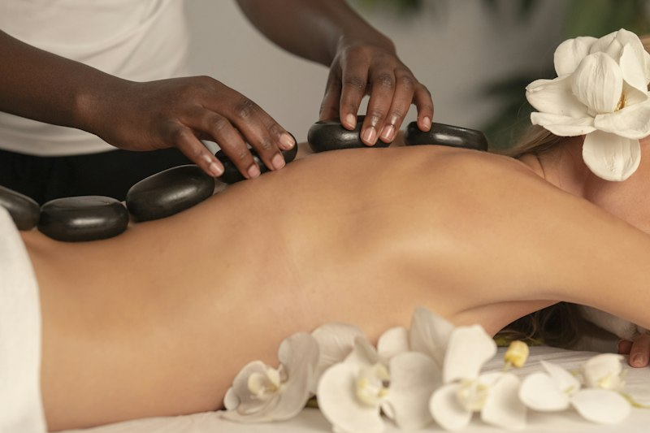
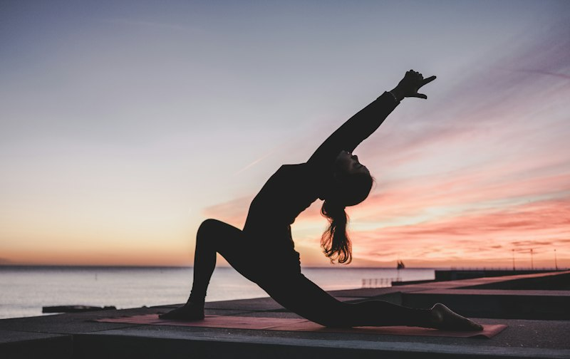
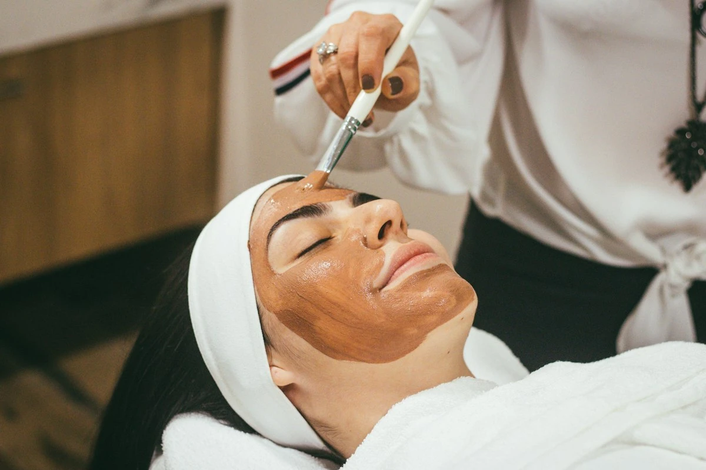
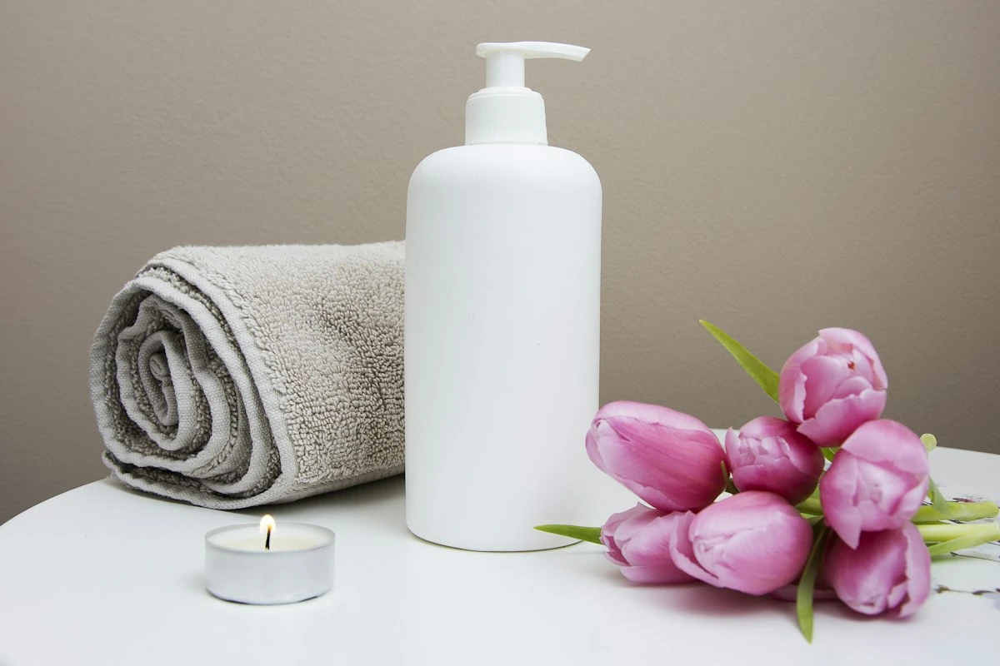

Slow-pressure bodywork that lengthens fascia and settles the breath.
Restore like the tide — quietly, completely.
A mineral spa for deep rest, precise touch, and nights that soften the nervous system.
Rituals
Choose a single treatment or weave a longer journey across touch, heat, movement, and mind.
View full menu
Slow-pressure bodywork that lengthens fascia and settles the breath.
Mobility flows and restorative yoga for joints that carry too much.
Mineral masks and lymphatic techniques for clear, quiet skin.
Contrast pools, steam, and sauna cycles calibrated for recovery.

Salt wraps and lymphatic drainage that lighten without severity.

Breathwork, sound baths, and guided stillness under soft light.
Hydro quiet
Most visits begin on the hydro deck — contrast pools, soft steam, and a few unhurried minutes before any treatment starts.
Explore hydro & heat

Steam · contrast · soft landing
Curated journeys
Each journey pairs treatments into a single afternoon — browse all three, then book the one that matches your day.
 120 min
120 min
Hydro contrast, slow massage, and a guided breath close — designed for overloaded evenings and shallow sleep.

105 minLymphatic facial, salt wrap, and mind studio stillness for skin and headspace that feel fogged.
Restorative movement, deep tissue massage, and heat cycle for joints that never quite switch off.
Guides
Four senior practitioners shaping the centre’s quiet, precise touch.
 01
01
Lead Restorative Therapist
Slow fascia work paired with breath-led closes.
Hydrotherapy Specialist
Contrast pools calibrated for deep recovery.
Facial & Skin Guide
Lymphatic techniques for clear, quiet skin.
 04
04
Mind Studio Facilitator
Sound baths and guided stillness under soft light.
Membership
Three memberships — from first visits to full canopy access. Pause or change tier anytime.

A gentle entry for monthly mineral care.
Our balanced rhythm for consistent recovery.
Full immersion for those who live here.
Voices
Quiet notes from people who return — not for spectacle, for how they leave.
The centre feels like cool water for the mind. I leave quieter than I arrived — every single time.
Night Tide Reset fixed my sleep more gently than anything I’ve tried. Precise therapists, zero theatrics.
Mineral Clarity gave my skin and attention span the same gift: space. I book it like a monthly meeting with myself.
Journal
Short reads on recovery, ritual design, and quiet living.

How warm-to-cool cycles cue the parasympathetic system without drama.
Read note
What fascia responds to when therapists stop racing the clock.
Read note
Lighting, scent load, and seating angles that invite stillness.
Read note
Spaces
Every suite is built like a tide pool — cool materials, low scent load, and light that never shouts.
Sound-dampened rooms for massage, facial, and detox wrap work.
Open floor for restorative flows and joint-softening mobility.
Contrast pools and steam cycles under night-tide lighting.

Atelier
Our treatment floor pairs cold-pressed botanicals with hydro-warmed stone — a craft space, not a clinic corridor.
See treatment menuQuestions
Clear answers so you can arrive already softer.
Plan for 20 minutes before your booking. We’ll walk you through the hydro lounge, lockers, and a short intake so your session can start unhurried.
No. Single rituals and journeys are open to guests. Memberships simply unlock better pacing, lounge access, and priority evening slots.
A swimsuit or spa wrap is ideal. Robes, towels, and slippers are provided in every suite and on the hydro deck.
Yes. Our curated journeys already pair them, or your therapist can build a custom afternoon when you book through Contact.
We keep scent load intentionally low. Ask for an unscented protocol when booking — most treatments adapt cleanly without fragrance.
Book a first ritual or open a membership — we’ll match you with the right guide.